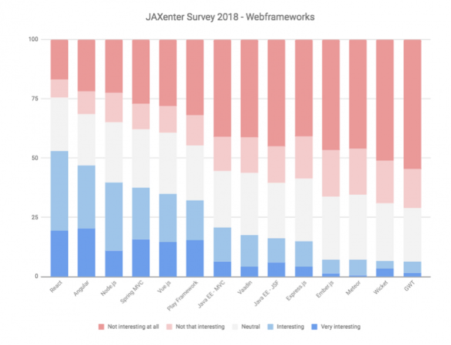
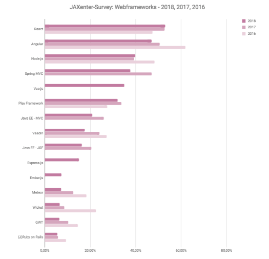
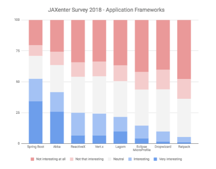
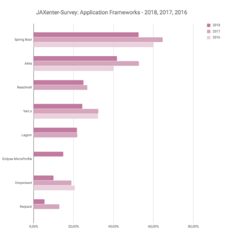
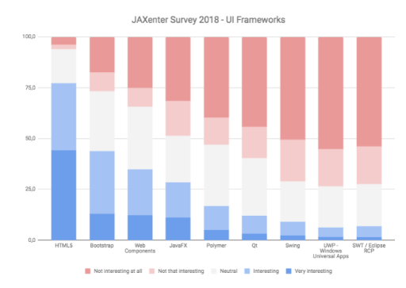
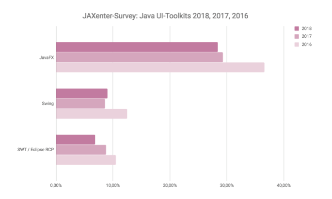
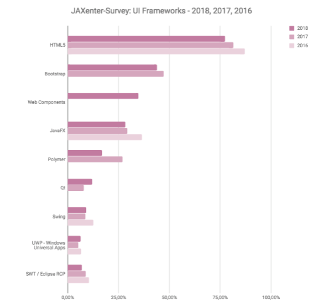
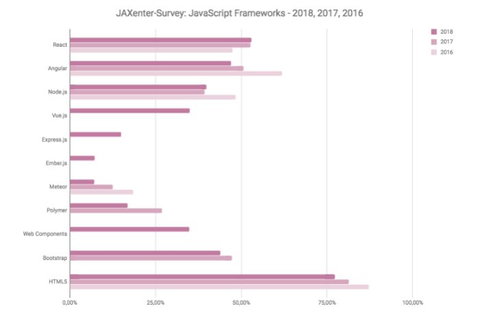

top-frameworks-trends-2018
来自85个国家的超过1,000名参与者和大量数据，JAXenter调查了2018年哪些技术主题值得关注，并与历史进行了对比。
Web框架
React、Angular和Node.js排名占据前3，我们可以看出JavaScript开发框架可以说是最近几年最受欢迎的web框架。排在第四位的是Java生态系统的Spring MVC，紧接其后的是国内大受欢迎的Vue.js。

我们来回顾一下2016年和2017年，web框架的排名。

Angular在2016年的时候可能不叫受欢迎，但是后来被React后来居上。React在今年将会继续超越Angular。Java生态的web框架越来越不受欢迎了，例如Spring MVC.
应用程序框架
Java生态中Spring Boot越来越受欢迎。不知道新秀Eclipse MicroProfile未来表现如何。

对比2016年和2017年的发展趋势：

UI toolkits
2018年，HTML5将是绝对的王者，紧随其后的是Bootstrap和Web组件。

来看一下Java UI toolkits在2016年和2017年的情况。

程序员们对JavaFX的兴趣似乎有所减少，但是它仍然排在Swing和SWT前。需要注意的是，从JDK11开始，JavaFX将作为与JDK分离，作为独立的模块。Oracle在一份白皮书中写道，截至2022年3月，JavaFX新修补程序将继续得到Java SE 8的支持，并宣布他们“正在与感兴趣的第三方合作，以便更容易地构建和维护JavaFX作为单独分发的开源模块“。
我们来对比一下UI Frameworks在2016年和2017年的表现：

JavaScript
JavaScript框架显然是这次的精华，让我们仔细看看过去三年情况如何变化。

React、Angular和Node.js遥遥领先，HTML5和Bootstrap的阵地也很大。
Web Components是一套不同的技术（不是React中所涉及到的组件），允许您创建可重用的定制元素（它们的功能封装在您的代码之外）并且在您的web应用中使用它们，有点类似React，但是区别也挺大，很容易被人忽视，因为React、Vue中也有组件的概念，不知道其发展将如何。